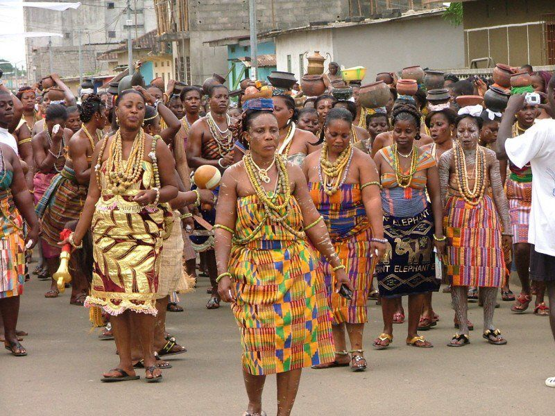

The Akan are a meta-ethnicity living in the southern regions
of present-day Ghana and Ivory Coast in West Africa. The Akan language is a group
of dialects within the Central
Tano branch of the Potou–Tano subfamily of the Niger–Congo family.
Origin and Ethnogenesis
The greater Akan people (macro-ethnic group) speak Kwa languages.
The proto-Kwa language is believed to have
come from East/Central Africa, before settling in the Sahel.
The people who became known as the Akan migrated
from the Sahel to coastal west Africa. The kingdom of Bonoman was firmly
established in the 12th century by the
Akan people. Bonoman was a trading state between the Akan and neighboring
people especially those from Djenné.
During different phases of the Bonoman empire groups of Akans migrated
out of the area to create numerous states
based predominantly on gold mining and trading of farm products.

The Akan naming system is a culture that was developed by the Ghananians. Children were given a
"day name"
which corresponds to the day in the week they were born. The tradition was shared out through-out west
Africa and the African Diaspora. Notable figures with Akan names include Ghana's first president Kwame
Nkrumah
and former United Nations Secretary-General Kofi Annan.
Get to know your 'Akan Name' by simply filling out the form below.